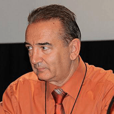

İştİrakçılar
Xarici Mütəxəssislər

Prof. DR. Igor Krivopavlov Moskvin (Rusiya)
Apiterapiya Mütəxəssisi

Raxmatulin Dmitri Konstantinoviç (Belarusiya)
Belarus Respublikası Milli Elmlər Akademiyası Arıçılıq İnstitutunun Arıçılıq Laboratoriyasının rəhbəri, Peşəkar Arıçı

Pavel (Qazaxıstan)
Peşəkar Arıçı

Harun Kuloğlu (Türkiyə)
Baytar Həkim, Xəstəliklər üzrə mütəxəssis

İzzet Akçay (Türkiyə)
Ana Arı yetişdiricisi
Yerli Mütəxəssislər

Elxan Ələkbərov
Peşəkar Arıçılar Birliyinin sədri

Rüfət Nərimanzadə
Peşəkar Arıçı